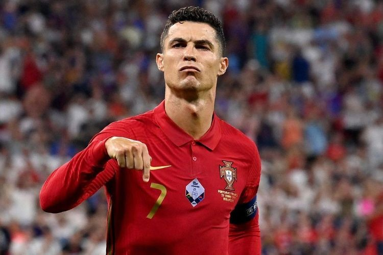

O projeto tem como objetivo principal apresentar a trajetória de Cristiano Ronaldo, um dos maiores ícones do esporte mundial, utilizando recursos audiovisuais para atrair a atenção dos estudantes e fãs do futebol de todas as idades. A ideia é mostrar que, com esforço, disciplina e foco, é possível superar dificuldades e alcançar grandes conquistas.
1. Biografia de Cristiano Ronaldo
Nascimento: 5 de fevereiro de 1985, na Ilha da Madeira, Portugal.
Infância humilde: superou dificuldades familiares e sociais.
Início no futebol: destaque no Sporting de Lisboa e descoberta por olheiros do Manchester United.
2. Linha do Tempo da Carreira
2003–2009 – Manchester United: primeiros títulos e crescimento.
2009–2018 – Real Madrid: auge da carreira, quatro Champions League.
2018–2021 – Juventus: conquistas na Itália.
2021–2022 – Retorno ao Manchester United.
2022–atualmente – Al-Nassr e recordes internacionais com a seleção portuguesa.
3. Principais Títulos
5x Champions League
Eurocopa 2016 (Portugal)
Liga das Nações 2019 (Portugal)
Diversas ligas nacionais e copas em Inglaterra, Espanha e Itália
Diversos prêmios individuais, incluindo 5x Bola de Ouro.
🔹 Vídeo Principal
Um documentário (incorporado via YouTube) com os principais momentos da carreira de Cristiano Ronaldo, abordando sua infância, clubes, seleção e conquistas.
🔹 Galeria de Vídeos
Miniaturas de vídeos com:
Gols históricos
Jogadas memoráveis
Momentos emocionantes
Treinamentos e bastidores
O💬 Mensagem Central
Cristiano Ronaldo é exemplo de superação, persistência e paixão pelo que faz. O projeto visa inspirar os alunos e visitantes a perseguirem seus sonhos com determinação, mesmo diante das dificuldades.
🎓 Aplicações Educacionais
Pode ser usado em projetos interdisciplinares envolvendo História, Educação Física, Português e até Geografia (explorando os países em que Ronaldo jogou).
Incentiva o uso de recursos digitais e a criação de conteúdo multimídia por parte dos alunos.
